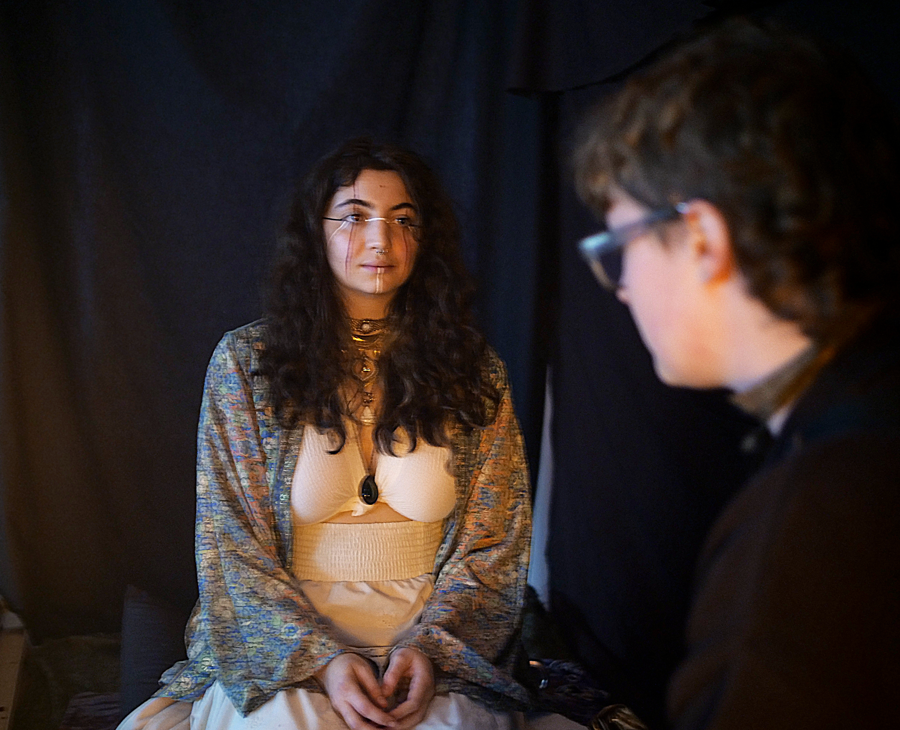

[Colaboración] Blodørn por Jens Klitte Mogensen
detalles acá
STADSWACHT 2026
STADSWACHT 2026
 - frame at 9m3s.jpg)
Cortometraje, 2025. 0:11:00.
La Haya/Ámsterdam, Países Bajos
Dirigido por Ties de Knegt y Martina Parma Muñoz
Actores
Ásta Sol Kraus
Jacobus Benning
Ties de Knegt

Pieza performática construida en el espacio
4 horas — noviembre, 2023
Galería 'Neck of the Woods' — Rotterdam, Países Bajos
Documentación de la performance (fragmento)